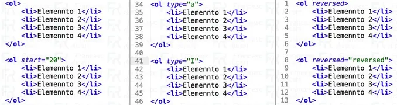

Unidad IV - Listas
Inicio Clase 1 Clase 2 Clase 3 Clase 4 Clase 6 Programa
Uno de los elementos más comunes en HTML, son las listas. Se definen cinco clases de listas, pero las más usadas son: Listas Ordenadas o Numeradas

Las listas ordenadas son listas donde cada elemento está numerado. Van encerradas en las etiquetas <OL> </OL>, y cada elemento de la lista empieza con la etiqueta <LI>, que va de un solo lado, no es obligatorio poner el cierre.
Ejemplo:
<OL>
</OL>
Los atributos son partes adicionales de las etiquetas HTML, que contienen opciones u otra información acerca de la etiqueta en sí.
Sintaxis:
<Etiqueta Atributo = " " > ... ... ... ... ... ... .... </Etiqueta>
Ejemplo:
<OL Type = "I">
</OL>
<OL type = "1" start = "4">
</OL>
En las listas con viñetas los elementos están marcados con una viñeta; es decir, un símbolo tipográfico especial. Estas listas se ven igual que las numeradas, excepto que las listas se indican con las etiquetas <UL> </UL>, y los elementos de la lista también se indican con la etiqueta <LI>.
Ejemplo:
<UL>
</UL>
Ejemplo:
<UL type = "square">
</UL>
En las listas de glosario, cada elemento tiene dos partes: el término y su definición. Por ello, en ocasiones a estas listas se les llama también de definición. Estas dos partes tienen sus propias etiquetas: <DT> para el término, y <DD> para su definición; van de un solo lado, y se usan en pares. Todas las listas de glosario están indicadas con las etiquetas <DL> </DL>.
Ejemplo:
<DL>
</DL>
El lenguaje HTML nos permite insertar una lista dentro de otra. Se pueden anidar listas de distinto tipo, por ejemplo, podemos tener una lista desordenada y uno de los ítems puede ser una lista ordenada.
Para el anidamiento de listas solo debemos tener cuidado en la correcta apertura y cerrado de las mismas.
Ejemplo:
<UL>
<OL>
</OL>
</UL>
villoan73@gmail.com CT y CEV "Pdte Carlos A. López"
Webmaster: Jhoan Ramirez & Matias Ruiz Diaz © 2026